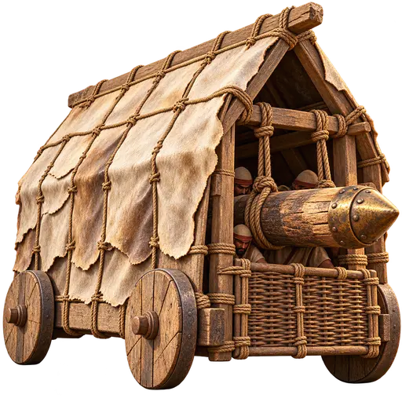
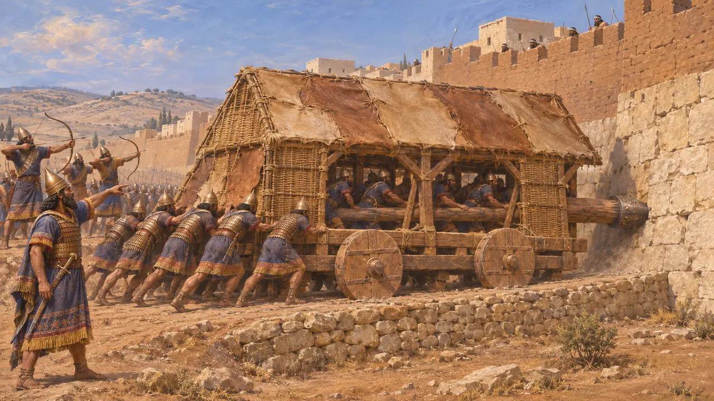
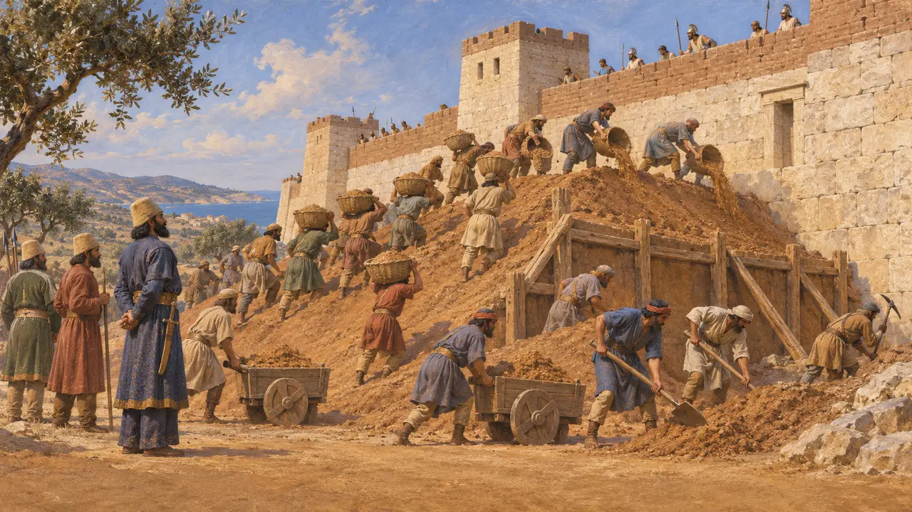
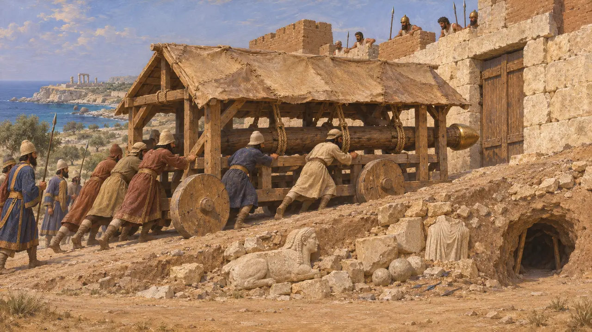
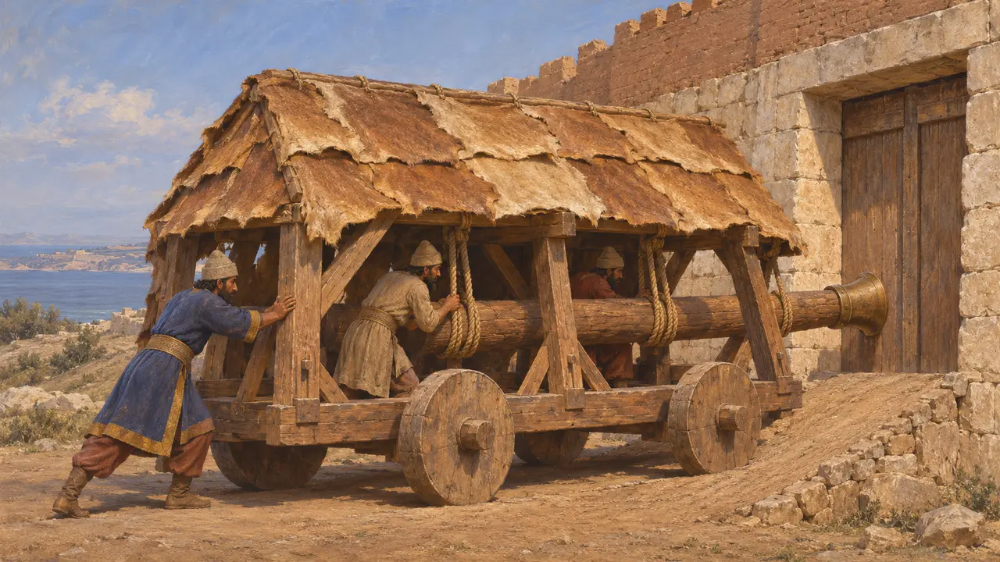

페르시아 엄폐 충차
성벽과 성문을 부수기 위한 지붕 덮인 충차, 근동, 기원전 9-5세기
엄폐 충차는 흔히 끝에 금속을 씌운 무거운 들보로, 바퀴 달린 덮개 안에서 휘두르거나 밀어 성벽이나 성문을 들이받았으며, 덮개는 운용병을 화살과 돌로부터 지켜 주었습니다. 아시리아인이 이를 널리 사용했고, 그 뒤를 이은 페르시아인도 많은 도시를 포위했습니다. 그러나 아케메네스 시대의 어떤 사료도 충차를 분명히 보여 주지 않으므로, 페르시아군이 이를 얼마나 자주 사용했는지는 여전히 열린 문제입니다.
게임에서: 게임에서 충차는 약탈자 야영지의 울타리와 오두막을 빠르게 부수지만 싸울 수는 없으므로 창병이 지켜야 한다. 실제 충차는 산속 야영지가 아니라 성벽과 성문을 공격하는 데 쓰였으며, 사료에 나타난 페르시아의 공성은 주로 토루와 갱도에 의존했다.

아시리아의 본보기
당대 기록님루드와 니네베에서 나온 신아시리아 궁전 부조에는 고리버들이나 가죽 덮개 아래 바퀴 달린 충차가 성벽을 공격하고, 궁수들이 엄호 사격을 하는 모습이 담겨 있습니다. 이런 장면은 기원전 9세기 아슈르나시르팔 2세 때부터 나타납니다. 산헤립의 라키시 부조는 기원전 701년의 공성전을 보여 주는데, 충차가 쌓아 올린 경사로를 따라 도시 성벽으로 밀려 올라가고 있습니다.
Lachish reliefs, South-West Palace, Nineveh (British Museum); Y. Yadin, The Art of Warfare in Biblical Lands, 1963

헤로도토스가 전하는 페르시아의 공성전
고대의 전승헤로도토스에 따르면 하르파고스는 기원전 545년경 성벽에 흙더미를 쌓아 올려 이오니아의 도시들을 함락했다. 그는 또한 리비아의 바르케에서 페르시아인이 판 갱도, 갱도 공격으로 포위 다섯 달째에 함락된 키프로스의 솔로이, 그리고 기원전 494년 갱도와 온갖 공성 기계로 함락된 밀레토스에 대해 이야기한다. 그러나 그는 이 기계들이 무엇이었는지 설명하지 않으며, 페르시아인이 충차를 썼다고 언급한 곳은 어디에도 없다.
Herodotus 1.162; 4.200; 5.115; 6.18

파포스의 공성 경사로
당대 기록키프로스의 옛 파포스 발굴에서는 기원전 498-497년경 키프로스 반란 때 페르시아 포위군이 성벽에 맞대어 쌓은 공성 경사로가 드러났다. 수비군은 경사로 밑으로 땅굴을 파 그것을 무너뜨리려 했다. 그곳에서는 화살촉과 창촉 수백 점과 많은 돌 탄환이 발견되었고, 인근 성소에서 가져와 채움재로 쓴 부서진 조각상들도 함께 나왔다. 이러한 경사로는 병력과, 어쩌면 공성 기계까지 성벽으로 올려 보내기 위해 쌓았다.
F. G. Maier and V. Karageorghis, Paphos: History and Archaeology, 1984

페르시아인은 충차를 썼는가
분쟁 중아케메네스 시대의 부조나 비문, 점토판 가운데 공성 충차를 분명히 보여 주는 것은 없으며, 헤로도토스도 밀레토스의 공성 기구가 무엇이었는지 밝히지 않습니다. 일부 역사가들은 파포스의 것과 같은 경사로를 근거로 페르시아인이 아시리아의 충차를 계승했다고 봅니다. 다른 이들은 기원전 490년의 에레트리아처럼, 알려진 공성전의 승패가 주로 토루와 갱도, 봉쇄, 배신으로 갈렸다고 지적합니다. 플루타르코스가 인용한 에포로스는 기원전 440년 사모스의 공성 기구를 새로운 것이라 불렀으니, 에게해에서 충차는 아마 드물었을 것입니다.
Herodotus 6.101; Plutarch, Pericles 27; P. Briant, From Cyrus to Alexander, 2002
출처
- Herodotus, Histories
- F. G. Maier and V. Karageorghis, Paphos: History and Archaeology, 1984
- Y. Yadin, The Art of Warfare in Biblical Lands, 1963
- P. Briant, From Cyrus to Alexander, 2002
- Plutarch, Pericles 27